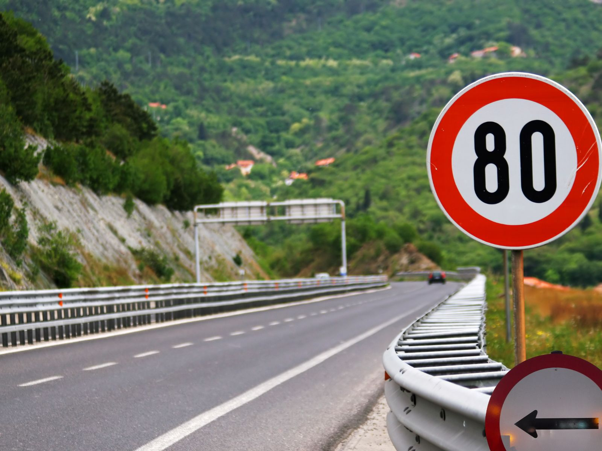
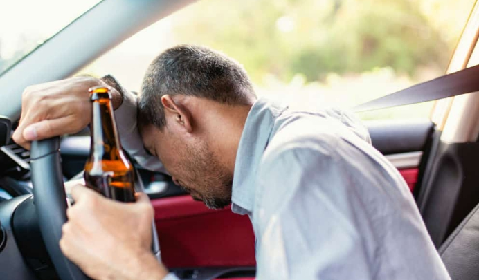
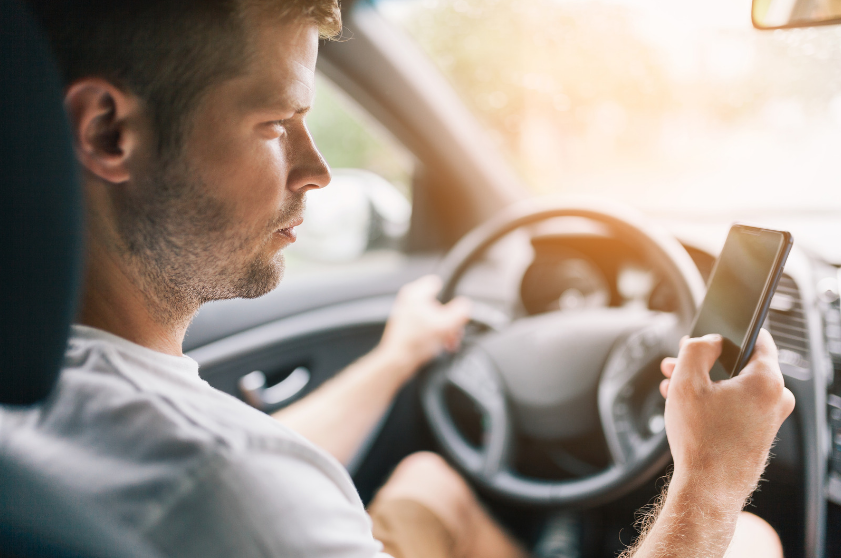
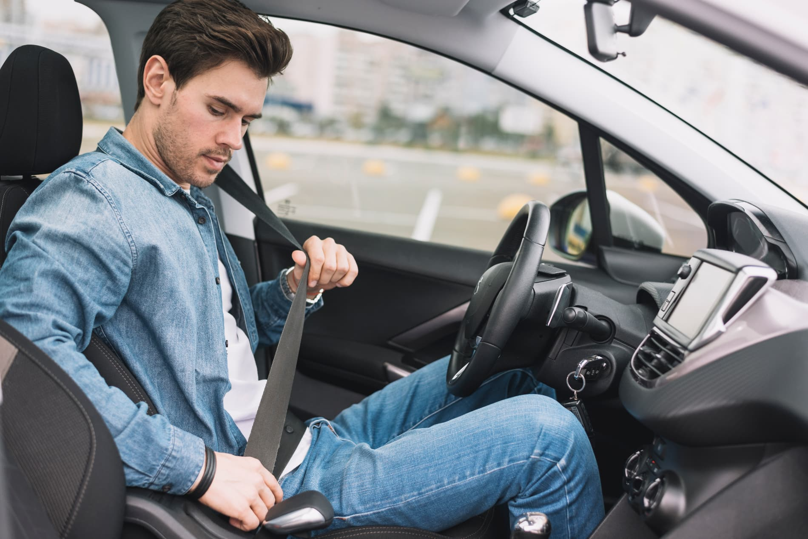
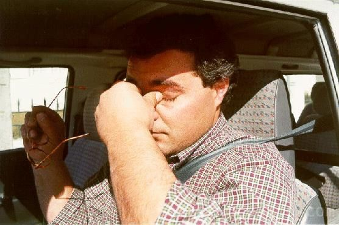
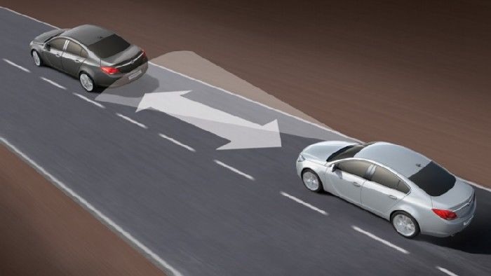
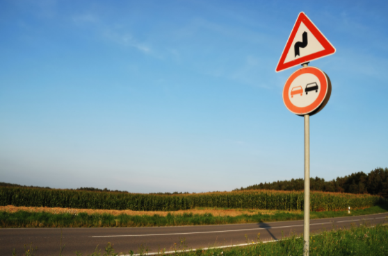
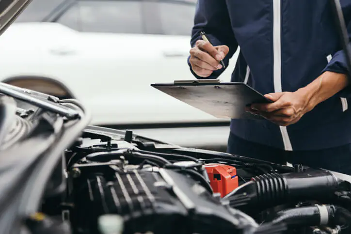

Limites de Velocidade
Dentro das localidades o limite é de 50 km/h. Em estradas nacionais e regionais pode circular até 90–100 km/h. Nas autoestradas o máximo é de 120 km/h.

Álcool ao Volante
O limite legal de álcool no sangue é de 0,5 g/l para condutores em geral. Para condutores novos (menos de 3 anos de carta) e profissionais, o limite desce para 0,2 g/l.

Uso do Telemóvel
É proibido usar o telemóvel na mão enquanto conduz. Apenas é permitido com um sistema de mãos-livres integrado no veículo. A infração resulta em coima e perda de 2 pontos na carta.

Cinto de Segurança
O cinto é obrigatório para todos os ocupantes do veículo, incluindo os passageiros de trás. Crianças com menos de 135 cm de altura devem usar sempre um sistema de retenção homologado.

Fadiga ao Volante
Em viagens longas faça uma pausa de 15 minutos a cada 2 horas. A sonolência é responsável por cerca de 20% dos acidentes mortais em Portugal. Nunca conduza com menos de 6 horas de sono.

Distância de Segurança
Mantenha sempre uma distância do veículo da frente que lhe permita parar em segurança. A regra dos 2 segundos é o mínimo recomendado. Com piso molhado, aumente para 4 segundos.

Sinais de Trânsito
Respeite sempre os sinais luminosos, verticais e as marcações no pavimento. Em cruzamentos sem sinalização, a prioridade é do veículo vindo da direita. Os agentes de trânsito têm sempre precedência.

Inspeção do Veículo
A inspeção periódica obrigatória (IPO) é feita 4 anos após a primeira matrícula e depois de 2 em 2 anos. O seguro de responsabilidade civil é sempre obrigatório. Circular sem estes documentos implica coima e apreensão do veículo.
